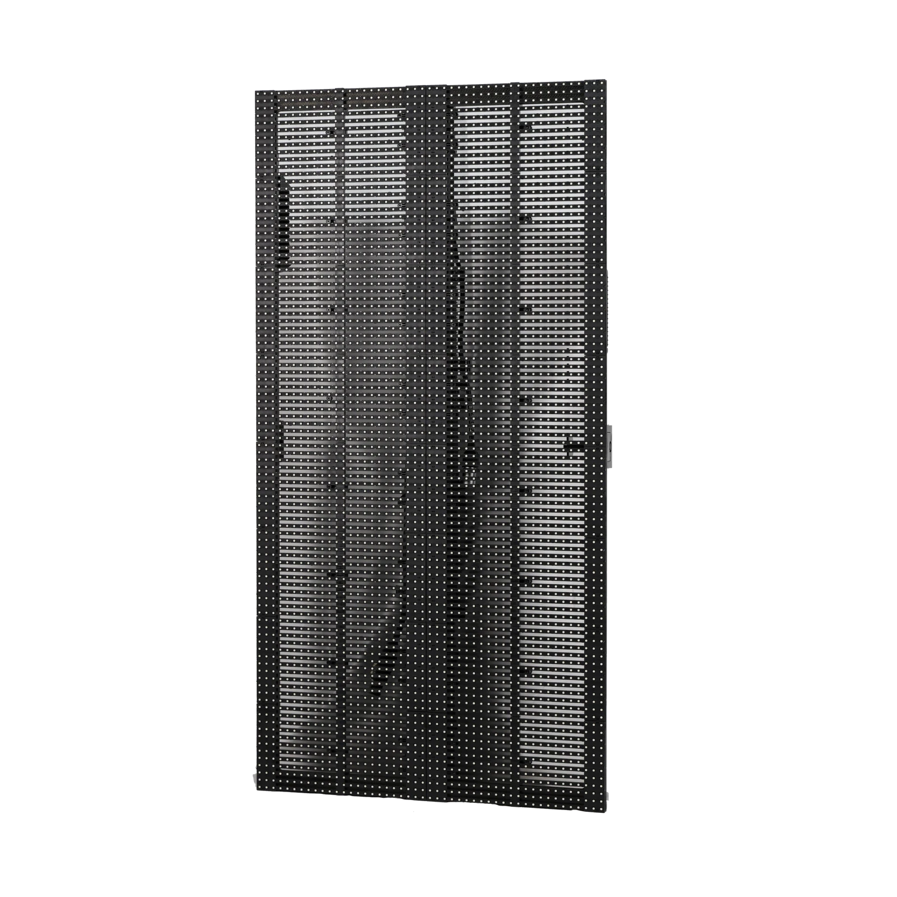
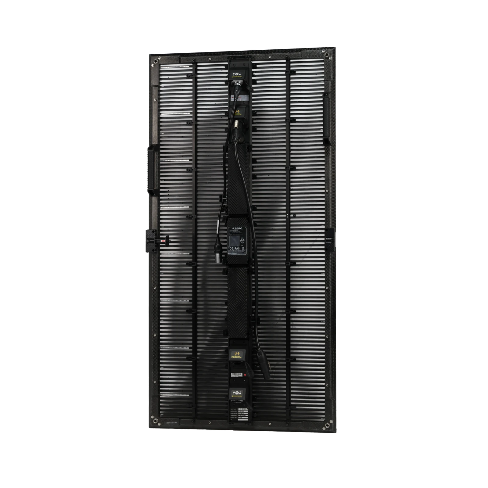
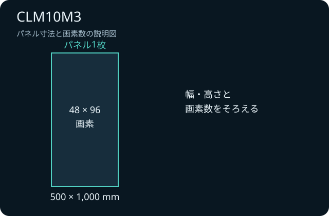

何を見せる？
映像だけでなく、背後の照明や舞台装置がどの程度見えるとよいかを決める。
LED ↗EQUIPMENT / 66
屋外対応・透過型LED
映像と背景を重ね、舞台全体をひとつの演出に。
KEY SPECIFICATIONS

画像を大きく見る ＋CLM10M3の表示面。幅500×高さ1,000mmで、LEDの列の間から背後が見える縦長パネルです。


01 / ROLE & FLOW
02 / BEFORE YOUR BRIEF
映像だけでなく、背後の照明や舞台装置がどの程度見えるとよいかを決める。
縦横の枚数と素材の比率をそろえ、客席から文字や人物の見え方を確かめる。
設置・電源・映像・照明の担当範囲と、本番中の異常連絡先をそろえる。
03 / CHOOSING THE RIGHT TOOL
屋外対応の透過型パネルを使い、映像と舞台照明を組み合わせたいイベントの検討に。
CLM10M2のハーフサイズや取付部材を、そのままM3に流用する前提では計画しません。異なる世代の混在可否は構成ごとに判断します。
M3はM2とLED素子や筐体仕様が異なります。機材名の「CLM10」だけで発注せず、M3まで指定します。屋外では風雨や支持構造の条件に合わせた停止基準を設け、映像の表示と設備の安全を別々に点検します。
重さ・消費電力はメーカーの公表値です。メーカー公式は CLM10 M3 を 7.4 kg・最大 600／平均 200 W/m² としており、資料によって 7 kg・1枚最大 250 W の表記もあります。吊り荷重と回路容量は、使う枚数と型式の公表値から計算して、設営前の図面に載せます。
M3の必要枚数、画面寸法、客席距離、屋内外、使用期間、支持部材、制御機器、設営・操作の範囲をお聞かせください。本体・周辺機材・搬入出・設営・本番操作・撤去を分けて、必要な範囲を整理します。